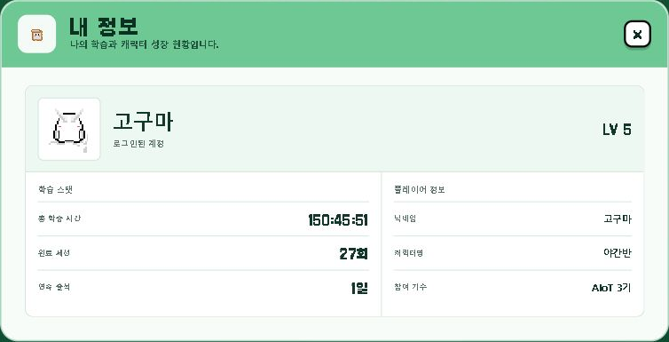
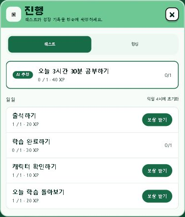
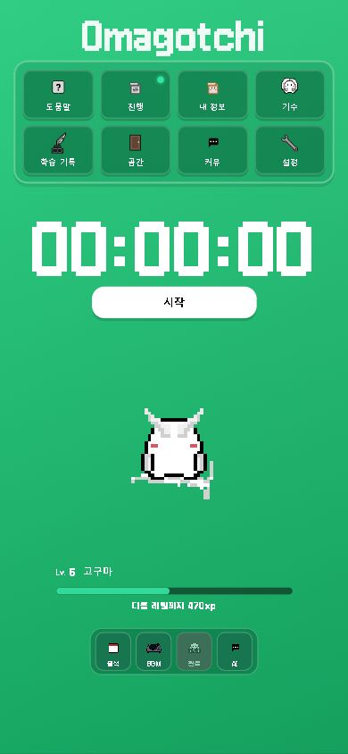
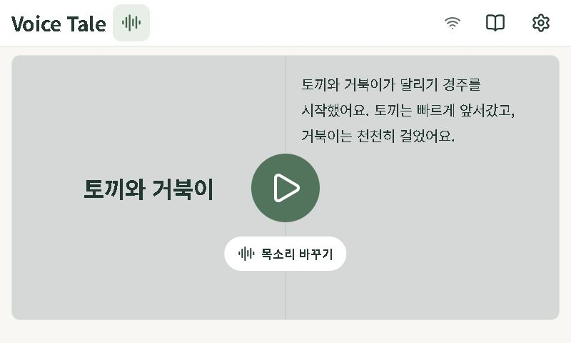
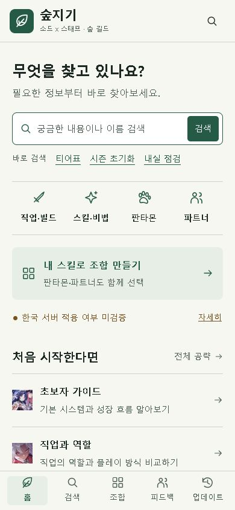

숲지기
정보를 찾는 순간부터 조합을 공유하는 순간까지
정확한 이름을 몰라도 찾을 수 있을까?
정보 구조부터 화면과 상태 설계까지,
직접 구현하며 사용 흐름을 다듬습니다.
정보를 찾는 순간부터 조합을 공유하는 순간까지
정확한 이름을 몰라도 찾을 수 있을까?




핵심 행동이 화면 크기에 가려지지 않도록
화면이 작아져도 중요한 행동은 남아 있을까?


모바일 입력과 Raspberry Pi의 감상을 연결하기
입력하는 사람과 듣는 사람에게 같은 화면이 필요할까?
숲지기, 1 / 3
탐색하는 웹, 성장하는 홈, 감상하는 디바이스.

모바일과 Raspberry Pi를 잇는 AI 동화
모바일 입력과 Raspberry Pi의 감상을 연결하기
Figma 레이아웃·베리언트 구성과 프론트엔드 UI를 맡았습니다.
화면의 모양보다, 사용할 때의 맥락에서 시작합니다.
검색하는 사람은 문서의 분류보다 지금 궁금한 내용을 먼저 떠올린다고 생각했습니다. 질문과 관련어를 기존 공략으로 연결하고, 찾은 정보를 바로 조합에 적용하는 흐름을 검토했습니다.
타이머·캐릭터·성장 정보를 한 화면에 담는 것만으로는 충분하지 않았습니다. 정보와 행동을 그룹으로 묶고, 화면 높이가 줄어도 스크롤로 필요한 기능에 도달할 수 있는지를 기준으로 구조를 재검토했습니다.
목소리와 그림을 준비하는 보호자에게는 입력과 관리가, 이야기를 듣는 어린이에게는 선택과 재생이 중요하다고 보았습니다. 모바일과 터치 화면의 역할을 나누고, 감상 화면의 주요 조작을 중앙에 모았습니다.
화면을 설계하고 구현하며 배운 경험과
프로젝트에서 맡은 일, 수상 이력을 정리했습니다.
구현 과정과 코드 변경은 GitHub에 기록합니다.